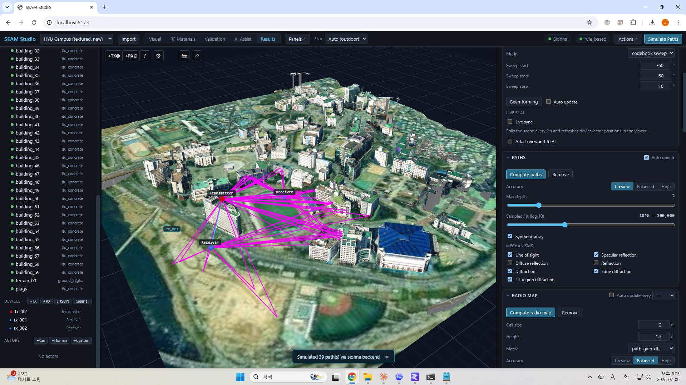
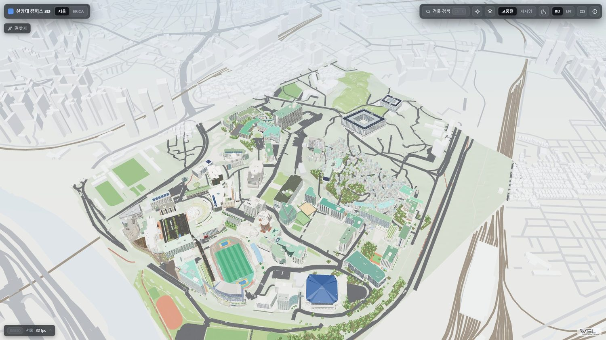
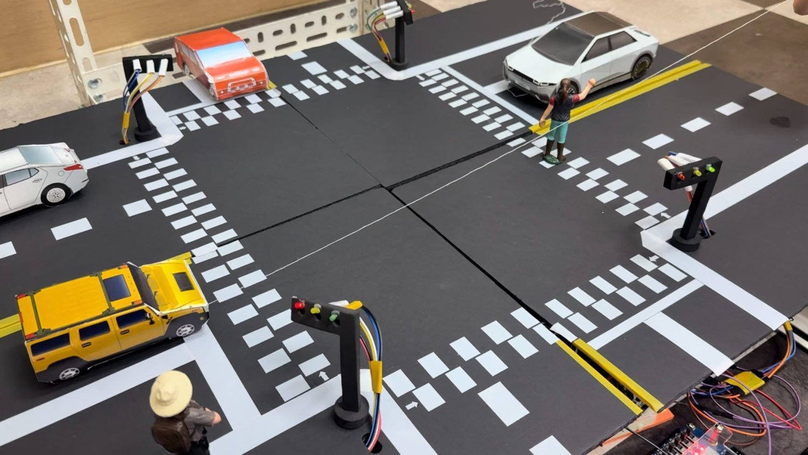
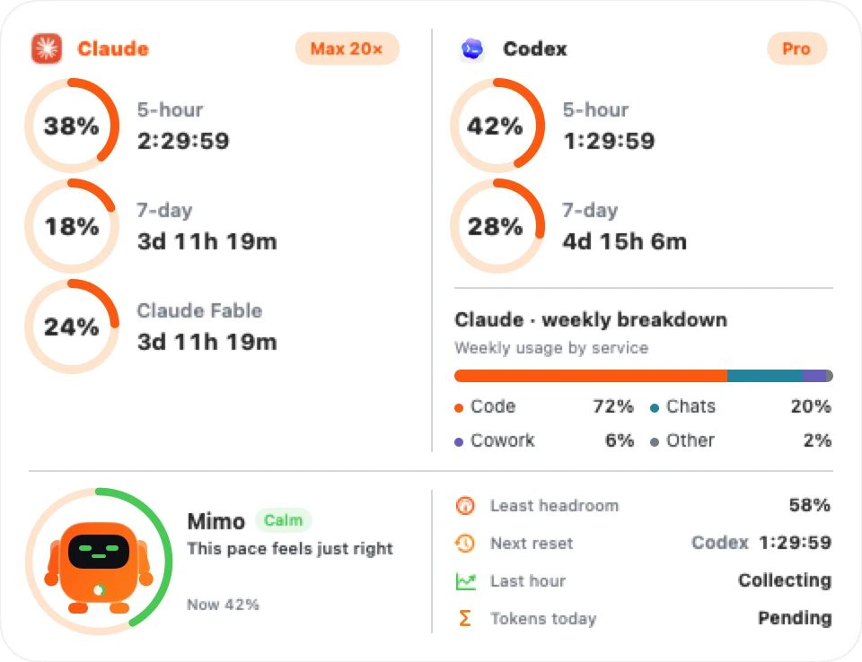
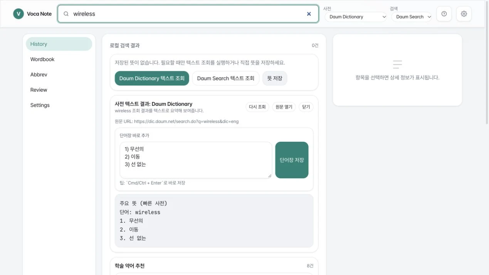
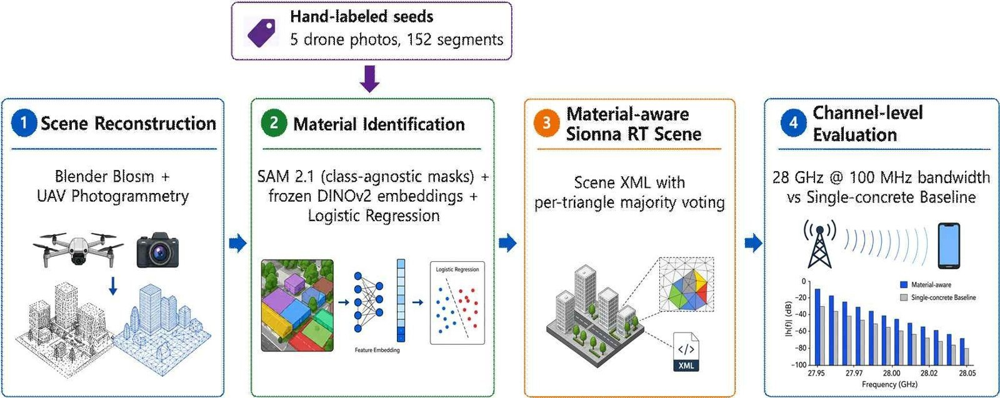

SEAM Studio
2026A 3D workspace for assigning materials and inspecting radio simulations.
3D authoring · Research software
Jaewoo Lee · Research & software
Undergraduate researcher · Hanyang WSL
I study the geometry and materials of physical spaces through computer vision. I build 3D tools, wireless digital twins, and small apps for everyday use.
2025—26Five projects & one toolkit

A 3D workspace for assigning materials and inspecting radio simulations.
3D authoring · Research software

Two campuses, building information, and walking routes shaped by the terrain.
Spatial web · 3D modelling

Drone video, accident detection and a working traffic-light prototype.
Capstone · Computer vision · Team of three

Usage limits and reset times, kept within reach in the menu bar.
macOS app · SwiftUI · Open source

Look up a word, keep it, and return to it while reading papers.
macOS & web · Reading tool
Open source · Agent workflow
An agent skill for turning scans and photographs into 3D scenes, with a record of the evidence behind each decision.

KICSFirst author · Conference presentation · June 2026
We combined SAM 2.1, frozen DINOv2 features, and logistic regression to identify surface materials in UAV photographs. We assigned the predictions to mesh triangles and used Sionna RT to study how material assignments affect channel responses.
KICS Summer Conference Proceedings, pp. 1942–1943.
5Hand-labeled UAV photos
152Labeled segments
0.8485-fold balanced accuracy
The 0.848 balanced accuracy is for segment-level material classification. At 28 GHz, we compared channel responses from a material-aware scene and a single-concrete scene. These are simulation comparisons; we have not validated them against radio measurements.
A little about me
I'm an Electronic Engineering undergraduate at Hanyang University ERICA and a researcher in the Wireless Systems Laboratory. My work uses computer vision to identify the geometry and materials of physical spaces for 3D editing and wireless simulation.
GitHub / jaewoo42002026 — Present
Hanyang University · Undergraduate researcher · Advisor: Prof. Sunwoo Kim
2023 — 2027
B.S. in Electronic Engineering · Expected February 2027
2021 — 2022
Electronic Engineering · Completed two years before transferring
2025 — 2026
Drone-focused student society · President (Aug 2025–Aug 2026)